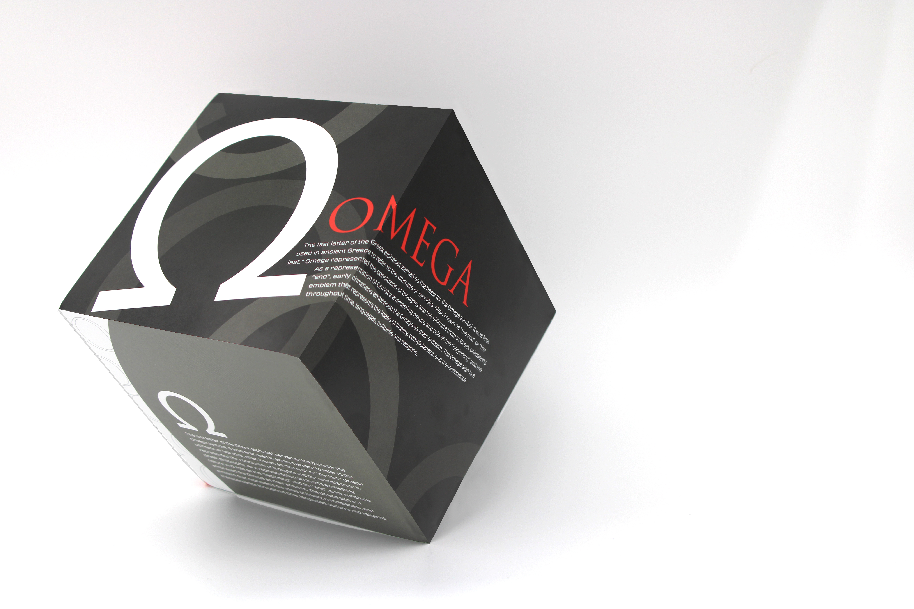

Early Letterform Cube

Program » Adobe Illustrator
Format » Cube 6in x 6in x 6in
We had to give a thorough rundown of the whole design process for this project, from copywriting to creating excellent mockups. By doing this, we aimed to hone the abilities necessary to come up with several solutions to a given issue. I made the decision to develop three distinct concepts, each with a unique focus point. I decided to make three distinct points: the title, the body content, and the symbol. In addition, I made care to emphasize my three main points by utilizing design principles in conjunction with the various design aspects to establish hierarchy within my designs.
BACK